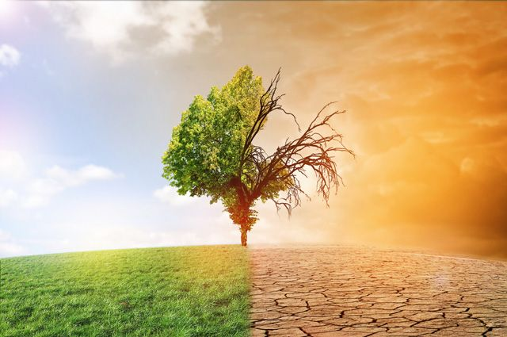

Климатический хаос
В последние годы климат на Земле заметно меняется: одни страны страдают от аномальной жары, другие от слишком суровых и снежных зим, непривычных для этих мест.
Экологи говорят о глобальном изменении климата, включающем увеличение средней годовой температуры, вызывающей таяние ледников, и повышение уровня Мирового океана. Помимо потепления, происходит также разбалансировка всех природных систем, которая приводит к изменению режима выпадения осадков, температурным аномалиям и увеличению частоты экстремальных явлений, таких как ураганы, наводнения и засухи.


По данным ученых, за десять месяцев 2015 года средняя температура планеты оказалась на 1,02 °C выше той, которую фиксировали в XIX веке (когда началось наблюдение за изменениями глобальной температуры). Порог в один градус был превышен впервые в современной истории. Ученые сходятся во мнении, что именно деятельность человека - сжигание нефти, газа и угля - приводит к парниковому эффекту, который вызывает повышение средней температуры. Эксперты отмечают, что в период между 2000 и 2010 годами наблюдался самый мощный рост выбросов парниковых газов за последние 30 лет. По данным Всемирной метеорологической организации, в 2014 году их концентрация в атмосфере достигла рекордно высокого уровня.
Я предпологаю,что нужно бороться с этим апокалипсисом,но некоторые думают,что за них всё сделает министерство экологии.Но даже само миристерство не в силах предотвратить апокалипсис.
Поэтому мы должны сами либо помогать природе,либо за нас с апокалипсисом справятся роботы.Существуют такие роботы,которые могут оповещать об опасности и заранее эвакуировать людей.
Авторское право не моё.